8 決定木分析
8.1 導入: 回帰木 vs 線形回帰
データセット1: 自動車の制動距離
- cars
- speed: 自動車の速度 (mph)
- dist: ブレーキをかけて自動車が停止するまでの距離 (feet)
- Rの標準データセット# cars
head(cars)
#> speed dist
#> 1 4 2
#> 2 4 10
#> 3 7 4
#> 4 7 22
#> 5 8 16
#> 6 9 10
tail(cars)
#> speed dist
#> 45 23 54
#> 46 24 70
#> 47 24 92
#> 48 24 93
#> 49 24 120
#> 50 25 85
# cars['speed']
plot(cars)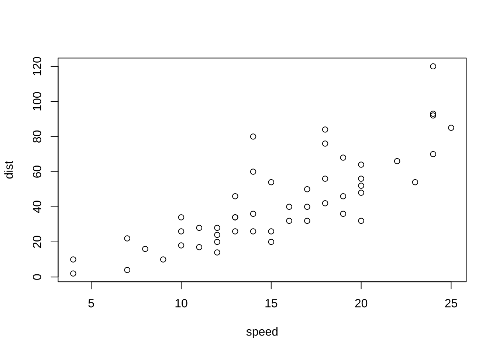
- 単回帰分析
# 単回帰分析
cars_lm <- lm(dist ~ speed, data = cars)
summary(cars_lm)
#>
#> Call:
#> lm(formula = dist ~ speed, data = cars)
#>
#> Residuals:
#> Min 1Q Median 3Q Max
#> -29.069 -9.525 -2.272 9.215 43.201
#>
#> Coefficients:
#> Estimate Std. Error t value Pr(>|t|)
#> (Intercept) -17.5791 6.7584 -2.601 0.0123 *
#> speed 3.9324 0.4155 9.464 1.49e-12 ***
#> ---
#> Signif. codes: 0 '***' 0.001 '**' 0.01 '*' 0.05 '.' 0.1 ' ' 1
#>
#> Residual standard error: 15.38 on 48 degrees of freedom
#> Multiple R-squared: 0.6511, Adjusted R-squared: 0.6438
#> F-statistic: 89.57 on 1 and 48 DF, p-value: 1.49e-12
# 回帰係数の取り出し
cars_lm$coef
#> (Intercept) speed
#> -17.579095 3.932409
coefficients(cars_lm)
#> (Intercept) speed
#> -17.579095 3.932409
# 回帰直線の図示
plot(cars)
abline(cars_lm)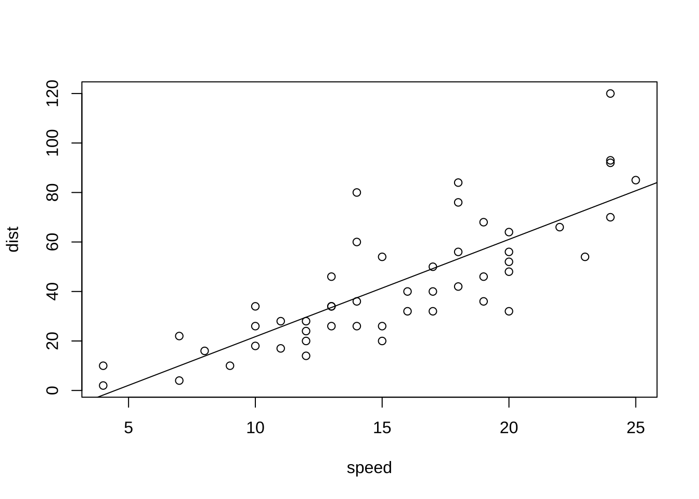
# モデル診断（残差プロット等) plot(cars_lm)\t\t 4枚表示: 残差vs Y適合値, 残差
# vs Q - Qプロット, 残差平方根 vs Y適合値, 残差 vs 影響力(てこ値とCook距離)- 予測
# 学習データに対する適合値 (内挿予測)
cars_pred <- predict(cars_lm)
# 残差
cars_resd <- residuals(cars_lm)
# 予測値 vs 残差
plot(cars_pred, cars_resd)
abline(h = 0, lty = 2)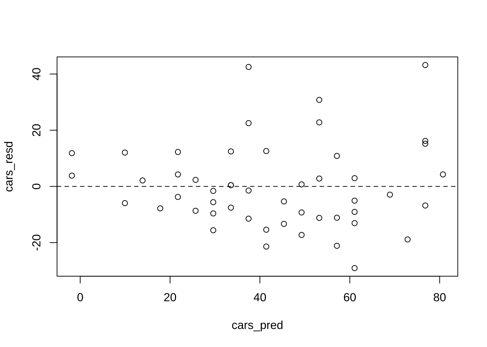
data.frame(cars, cars_pred, cars_resd)
#> speed dist cars_pred cars_resd
#> 1 4 2 -1.849460 3.849460
#> 2 4 10 -1.849460 11.849460
#> 3 7 4 9.947766 -5.947766
#> 4 7 22 9.947766 12.052234
#> 5 8 16 13.880175 2.119825
#> 6 9 10 17.812584 -7.812584
#> 7 10 18 21.744993 -3.744993
#> 8 10 26 21.744993 4.255007
#> 9 10 34 21.744993 12.255007
#> 10 11 17 25.677401 -8.677401
#> 11 11 28 25.677401 2.322599
#> 12 12 14 29.609810 -15.609810
#> 13 12 20 29.609810 -9.609810
#> 14 12 24 29.609810 -5.609810
#> 15 12 28 29.609810 -1.609810
#> 16 13 26 33.542219 -7.542219
#> 17 13 34 33.542219 0.457781
#> 18 13 34 33.542219 0.457781
#> 19 13 46 33.542219 12.457781
#> 20 14 26 37.474628 -11.474628
#> 21 14 36 37.474628 -1.474628
#> 22 14 60 37.474628 22.525372
#> 23 14 80 37.474628 42.525372
#> 24 15 20 41.407036 -21.407036
#> 25 15 26 41.407036 -15.407036
#> 26 15 54 41.407036 12.592964
#> 27 16 32 45.339445 -13.339445
#> 28 16 40 45.339445 -5.339445
#> 29 17 32 49.271854 -17.271854
#> 30 17 40 49.271854 -9.271854
#> 31 17 50 49.271854 0.728146
#> 32 18 42 53.204263 -11.204263
#> 33 18 56 53.204263 2.795737
#> 34 18 76 53.204263 22.795737
#> 35 18 84 53.204263 30.795737
#> 36 19 36 57.136672 -21.136672
#> 37 19 46 57.136672 -11.136672
#> 38 19 68 57.136672 10.863328
#> 39 20 32 61.069080 -29.069080
#> 40 20 48 61.069080 -13.069080
#> 41 20 52 61.069080 -9.069080
#> 42 20 56 61.069080 -5.069080
#> 43 20 64 61.069080 2.930920
#> 44 22 66 68.933898 -2.933898
#> 45 23 54 72.866307 -18.866307
#> 46 24 70 76.798715 -6.798715
#> 47 24 92 76.798715 15.201285
#> 48 24 93 76.798715 16.201285
#> 49 24 120 76.798715 43.201285
#> 50 25 85 80.731124 4.2688768.1.1 基本操作: 回帰木
回帰木, 分類木ともに,
パッケージrpartの関数rpart()を適用する.
library(rpart)
cars_rp <- rpart(dist ~ speed, data = cars)
summary(cars_rp) # ==> 葉3枚
#> Call:
#> rpart(formula = dist ~ speed, data = cars)
#> n= 50
#>
#> CP nsplit rel error xerror xstd
#> 1 0.4676398 0 1.0000000 1.0213135 0.2178083
#> 2 0.1104944 1 0.5323602 0.6688260 0.1430632
#> 3 0.0100000 2 0.4218658 0.5433788 0.1318838
#>
#> Variable importance
#> speed
#> 100
#>
#> Node number 1: 50 observations, complexity param=0.4676398
#> mean=42.98, MSE=650.7796
#> left son=2 (31 obs) right son=3 (19 obs)
#> Primary splits:
#> speed < 17.5 to the left, improve=0.4676398, (0 missing)
#>
#> Node number 2: 31 observations, complexity param=0.1104944
#> mean=29.32258, MSE=267.9605
#> left son=4 (15 obs) right son=5 (16 obs)
#> Primary splits:
#> speed < 12.5 to the left, improve=0.4328244, (0 missing)
#>
#> Node number 3: 19 observations
#> mean=65.26316, MSE=474.5097
#>
#> Node number 4: 15 observations
#> mean=18.2, MSE=78.42667
#>
#> Node number 5: 16 observations
#> mean=39.75, MSE=220.9375
plot(cars_rp, uniform = T, margin = 0.05)
text(cars_rp, all = T, use.n = T)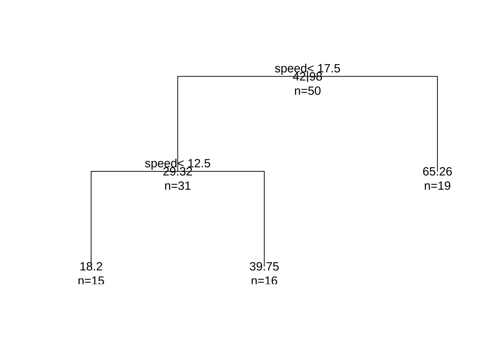
- 予測
# 学習用データに対する適合値 (内挿予測)
cars_rp_pred <- predict(cars_rp)
cars_rp_fitted <- data.frame(cars$speed, cars_rp_pred)
plot(cars$speed, cars$dist)
lines(cars_rp_fitted, type = "s")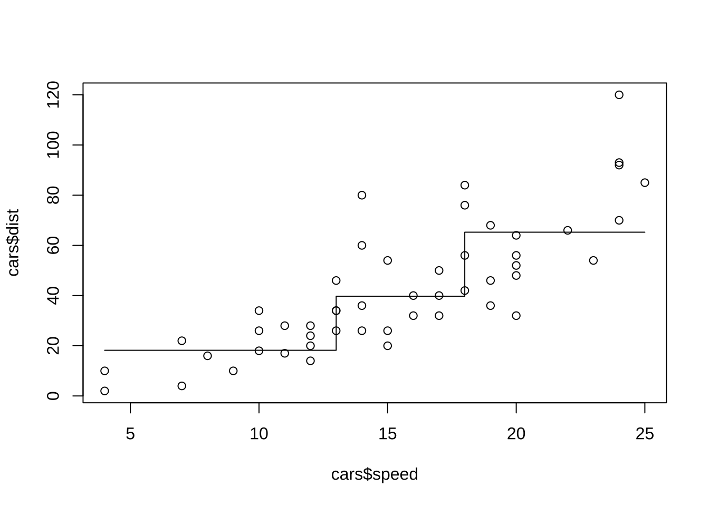
# 観測値, 線形回帰の適合値, 回帰木の適合値
data.frame(cars, cars_pred, cars_rp_fitted)
#> speed dist cars_pred cars.speed cars_rp_pred
#> 1 4 2 -1.849460 4 18.20000
#> 2 4 10 -1.849460 4 18.20000
#> 3 7 4 9.947766 7 18.20000
#> 4 7 22 9.947766 7 18.20000
#> 5 8 16 13.880175 8 18.20000
#> 6 9 10 17.812584 9 18.20000
#> 7 10 18 21.744993 10 18.20000
#> 8 10 26 21.744993 10 18.20000
#> 9 10 34 21.744993 10 18.20000
#> 10 11 17 25.677401 11 18.20000
#> 11 11 28 25.677401 11 18.20000
#> 12 12 14 29.609810 12 18.20000
#> 13 12 20 29.609810 12 18.20000
#> 14 12 24 29.609810 12 18.20000
#> 15 12 28 29.609810 12 18.20000
#> 16 13 26 33.542219 13 39.75000
#> 17 13 34 33.542219 13 39.75000
#> 18 13 34 33.542219 13 39.75000
#> 19 13 46 33.542219 13 39.75000
#> 20 14 26 37.474628 14 39.75000
#> 21 14 36 37.474628 14 39.75000
#> 22 14 60 37.474628 14 39.75000
#> 23 14 80 37.474628 14 39.75000
#> 24 15 20 41.407036 15 39.75000
#> 25 15 26 41.407036 15 39.75000
#> 26 15 54 41.407036 15 39.75000
#> 27 16 32 45.339445 16 39.75000
#> 28 16 40 45.339445 16 39.75000
#> 29 17 32 49.271854 17 39.75000
#> 30 17 40 49.271854 17 39.75000
#> 31 17 50 49.271854 17 39.75000
#> 32 18 42 53.204263 18 65.26316
#> 33 18 56 53.204263 18 65.26316
#> 34 18 76 53.204263 18 65.26316
#> 35 18 84 53.204263 18 65.26316
#> 36 19 36 57.136672 19 65.26316
#> 37 19 46 57.136672 19 65.26316
#> 38 19 68 57.136672 19 65.26316
#> 39 20 32 61.069080 20 65.26316
#> 40 20 48 61.069080 20 65.26316
#> 41 20 52 61.069080 20 65.26316
#> 42 20 56 61.069080 20 65.26316
#> 43 20 64 61.069080 20 65.26316
#> 44 22 66 68.933898 22 65.26316
#> 45 23 54 72.866307 23 65.26316
#> 46 24 70 76.798715 24 65.26316
#> 47 24 92 76.798715 24 65.26316
#> 48 24 93 76.798715 24 65.26316
#> 49 24 120 76.798715 24 65.26316
#> 50 25 85 80.731124 25 65.263168.2 回帰木
データセット2: 米國株価指数データ (再掲)
- Smarket: S&P500日次%リターン5年分
- Year 観測値の記録年 (2001--2005)
- Lag1 前日の%リターン
- Lag2 2日前の%リターン
- Lag3 3日前の%リターン
- Lag4 4日前の%リターン
- Lag5 5日前の%リターン
- Volume 取引量 (日次取引株式数, 単位十億枚)
- Today 当日の%リターン
- Direction 相場の方向性 (Down/Up, 2-水準因子)8.2, 8.3は, 決定木の動作を確認し, その特性を理解することを目的とする. 決定木の機能である, データセットの分類規則の生成にフォーカスし, データセットは学習用・予測用に2分割せず全てを使って学習させる. ここでは, 容易でないタスク (株価予測) を決定木で行うが, 予測力についてはいまは議論しない.
library(ISLR)
head(Smarket)
#> Year Lag1 Lag2 Lag3 Lag4 Lag5 Volume Today Direction
#> 1 2001 0.381 -0.192 -2.624 -1.055 5.010 1.1913 0.959 Up
#> 2 2001 0.959 0.381 -0.192 -2.624 -1.055 1.2965 1.032 Up
#> 3 2001 1.032 0.959 0.381 -0.192 -2.624 1.4112 -0.623 Down
#> 4 2001 -0.623 1.032 0.959 0.381 -0.192 1.2760 0.614 Up
#> 5 2001 0.614 -0.623 1.032 0.959 0.381 1.2057 0.213 Up
#> 6 2001 0.213 0.614 -0.623 1.032 0.959 1.3491 1.392 Up- 回帰木の構築
Smarketを使って, 回帰木を構築する. 回帰木では当日の%リターンTodayを目的変数とする.Smarketには, 当日の相場の上下の方向性を示す 量的変数Directionが含まれているが, これはTodayの予測変数に 使えないため除去する. 記録年であるYearも当日のリターン予測には (常識的に考えて) 使えないので除く.Volumeは.Todayと同じタイミングで得られる情報であるため, ここでは予測変数からは除いておくが, ラグ変数にするなどの工夫を すれば使っても良い.
library(tidyverse)
sp500 <- Smarket %>%
dplyr::select(-Year, -Direction, -Volume)
# Volumeは当日情報のため, 除いておく → 日付をずらせば加えても良い
# sp500$Vol_lag1 <- dplyr::lead(Smarket$Volume, n = 1)- 回帰木の適合
sp_rp <- rpart(Today ~ ., data = sp500)
sp_rp
#> n= 1250
#>
#> node), split, n, deviance, yval
#> * denotes terminal node
#>
#> 1) root 1250 1612.77800 0.00313840
#> 2) Lag5>=-2.892 1236 1528.47500 -0.01281958 *
#> 3) Lag5< -2.892 14 56.19987 1.41200000 *
#
sp_rp <- rpart(Today ~ ., data = sp500, control = rpart.control(cp = 0.008))
sp_rp
#> n= 1250
#>
#> node), split, n, deviance, yval
#> * denotes terminal node
#>
#> 1) root 1250 1612.77800 0.00313840
#> 2) Lag5>=-2.892 1236 1528.47500 -0.01281958 *
#> 3) Lag5< -2.892 14 56.19987 1.41200000 *
#
sp_rp <- rpart(Today ~ ., data = sp500, control = rpart.control(cp = 0.0079))
# rpart.control(minsplit = 20, minbucket = round(minsplit/3), cp = 0.01,
# maxcompete = 4, maxsurrogate = 5, usesurrogate = 2, xval = 10, surrogatestyle
# = 0, maxdepth = 30, ...) method: 'anova', 'poisson', 'class' or 'exp'
sp_rp
#> n= 1250
#>
#> node), split, n, deviance, yval
#> * denotes terminal node
#>
#> 1) root 1250 1612.77800 0.00313840
#> 2) Lag5>=-2.892 1236 1528.47500 -0.01281958
#> 4) Lag1>=0.2225 502 549.98260 -0.12242230 *
#> 5) Lag1< 0.2225 734 968.33720 0.06214033
#> 10) Lag2>=-0.291 496 567.84910 -0.02306048 *
#> 11) Lag2< -0.291 238 389.38390 0.23970170
#> 22) Lag5< -1.7375 15 49.41417 -0.80153330 *
#> 23) Lag5>=-1.7375 223 322.61330 0.30973990 *
#> 3) Lag5< -2.892 14 56.19987 1.41200000 *- 得られた回帰木の可視化
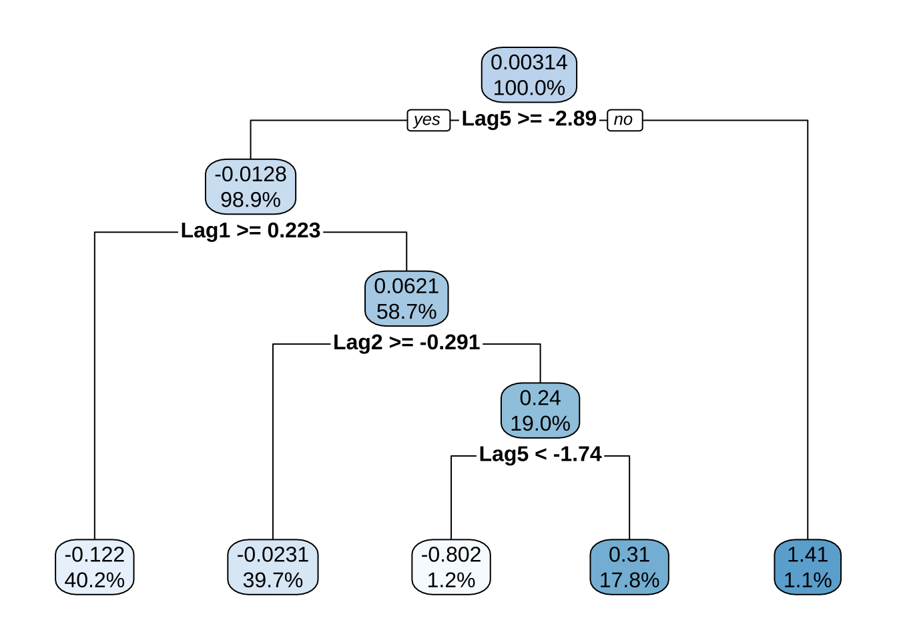
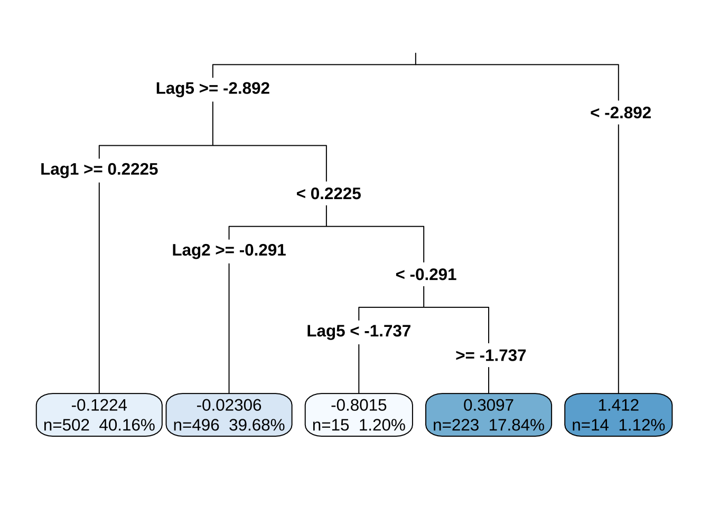
- CP表 (Complexity Parameter Table)
# CP値 vs 交差検証 (CV) 予測誤差
printcp(sp_rp)
#>
#> Regression tree:
#> rpart(formula = Today ~ ., data = sp500, control = rpart.control(cp = 0.0079))
#>
#> Variables actually used in tree construction:
#> [1] Lag1 Lag2 Lag5
#>
#> Root node error: 1612.8/1250 = 1.2902
#>
#> n= 1250
#>
#> CP nsplit rel error xerror xstd
#> 1 0.0174254 0 1.00000 1.0014 0.059247
#> 2 0.0079811 1 0.98257 1.0430 0.063153
#> 3 0.0079000 4 0.95863 1.1072 0.066215
plotcp(sp_rp)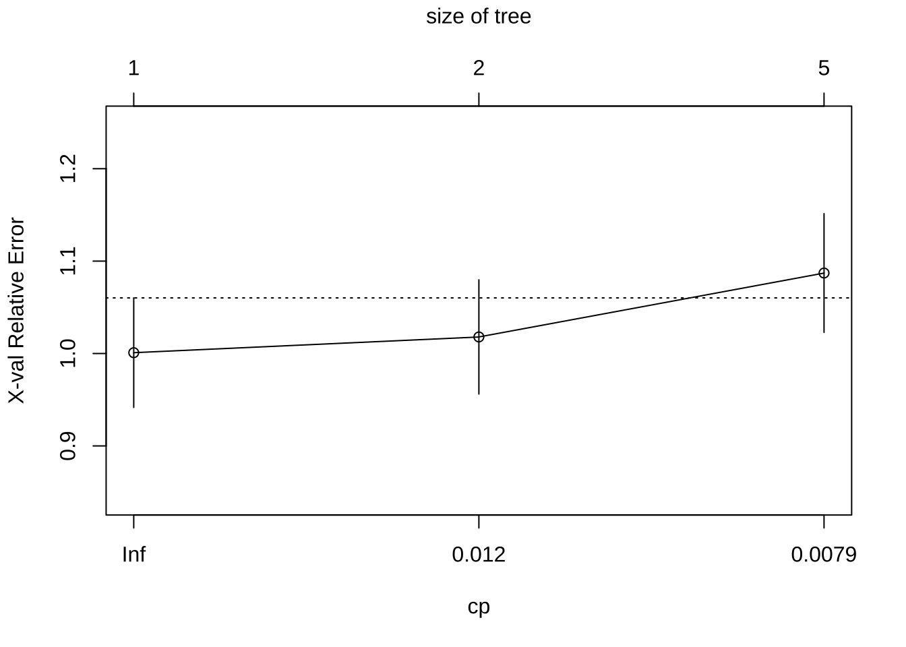
plotcp()は, 木の複雑度 (CP) (横軸) に対する
交差検証 (CV) 予測誤差の大きさ (縦軸) をプロットした図であり,
通常, 閾値
(点線で表される水平線. フルに成長した剪定前の木の持つ誤差の大きさ) を下回る最初のcpの値を
選択するのが望ましいとされる.
上で得られた図は, cp (横軸) が増えると, 交差検証誤差の大きさ (縦軸) が上がる, すなわち, 木を複雑にすると予測誤差が悪化するを示している.
木のサイズが1または2の時に点線を下回っているのみで, 1から2になると若干だが誤差は大きくなっており, データセットを分割することの説得性がこの図からは得らない. 株価予測の難しさを反映していると考えられる.
# 手動による剪定例 cp (complex parameter) の大きさでコントロール
prn_rp <- prune(sp_rp, cp = 0.008)
plot(prn_rp, uniform = T, margin = 0.05)
text(prn_rp, all = T, use.n = T)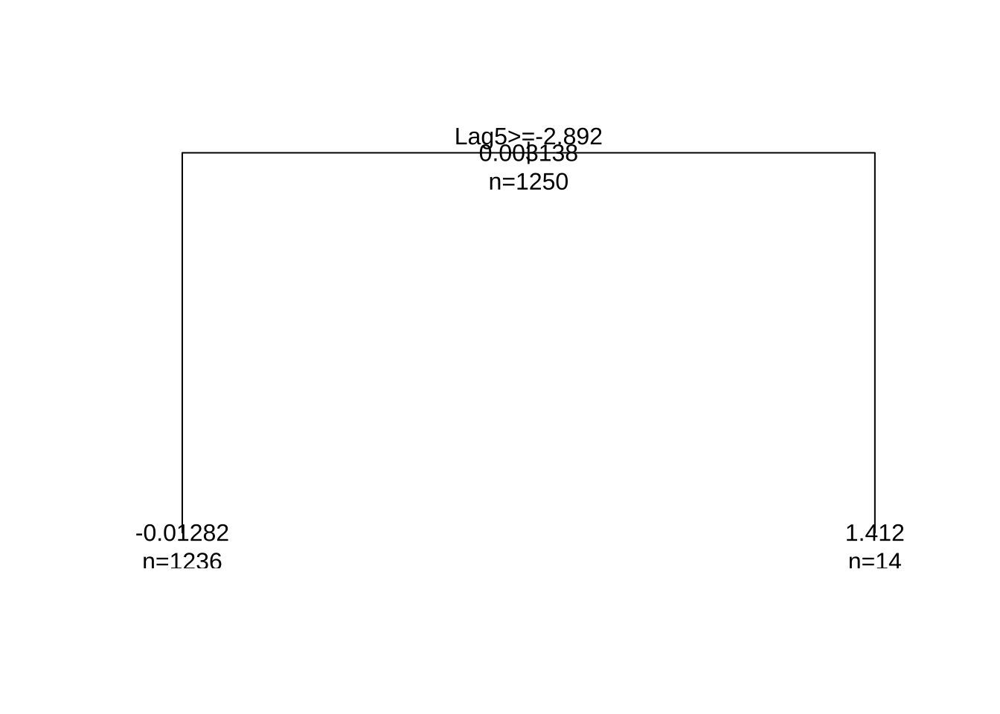
- パフォーマンス評価 (内挿予測)
自主課題 上で得られた決定木を解釈してみよう.
8.3 分類木
同じ Smarketを使って, 分類木を構築する.
回帰木では当日の%リターンTodayを目的変数としていたが,
ここでは, 量的変数Directionを目的変数に設定する.
Directionは, Todayを使って作られていることから,
Todayを予測変数に使わないようにYear, Volumeと共に除く.
sp500_2 <- Smarket %>%
dplyr::select(-Year, -Today, -Volume)
# sp500_2$Vol_lag1 <- dplyr::lead(Smarket$Volume, n = 1)- 分類木の適合
sp2_rp <- rpart(Direction ~ ., data = sp500_2)
sp2_rp
#> n= 1250
#>
#> node), split, n, loss, yval, (yprob)
#> * denotes terminal node
#>
#> 1) root 1250 602 Up (0.4816000 0.5184000)
#> 2) Lag1>=0.0555 610 286 Down (0.5311475 0.4688525)
#> 4) Lag1< 0.1375 50 14 Down (0.7200000 0.2800000) *
#> 5) Lag1>=0.1375 560 272 Down (0.5142857 0.4857143)
#> 10) Lag2>=0.635 118 45 Down (0.6186441 0.3813559) *
#> 11) Lag2< 0.635 442 215 Up (0.4864253 0.5135747)
#> 22) Lag4>=1.1645 53 18 Down (0.6603774 0.3396226) *
#> 23) Lag4< 1.1645 389 180 Up (0.4627249 0.5372751)
#> 46) Lag4< 0.833 363 174 Up (0.4793388 0.5206612)
#> 92) Lag2< -0.5965 134 60 Down (0.5522388 0.4477612) *
#> 93) Lag2>=-0.5965 229 100 Up (0.4366812 0.5633188) *
#> 47) Lag4>=0.833 26 6 Up (0.2307692 0.7692308) *
#> 3) Lag1< 0.0555 640 278 Up (0.4343750 0.5656250)
#> 6) Lag5< -0.8225 128 57 Down (0.5546875 0.4453125)
#> 12) Lag4< 1.3205 111 44 Down (0.6036036 0.3963964) *
#> 13) Lag4>=1.3205 17 4 Up (0.2352941 0.7647059) *
#> 7) Lag5>=-0.8225 512 207 Up (0.4042969 0.5957031)
#> 14) Lag2>=0.7265 101 49 Down (0.5148515 0.4851485)
#> 28) Lag2< 1.097 39 11 Down (0.7179487 0.2820513) *
#> 29) Lag2>=1.097 62 24 Up (0.3870968 0.6129032) *
#> 15) Lag2< 0.7265 411 155 Up (0.3771290 0.6228710) *- 得られた分類木の可視化
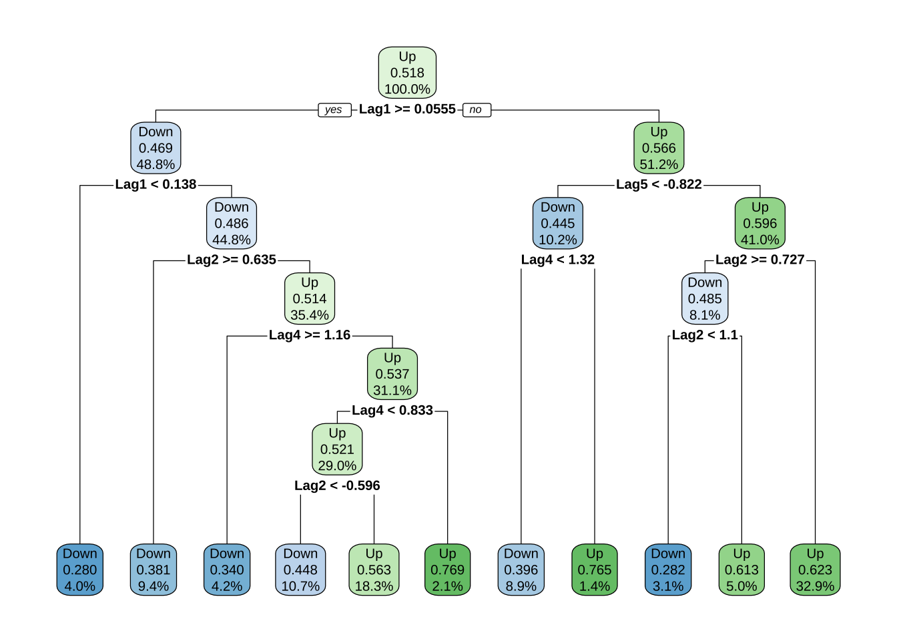
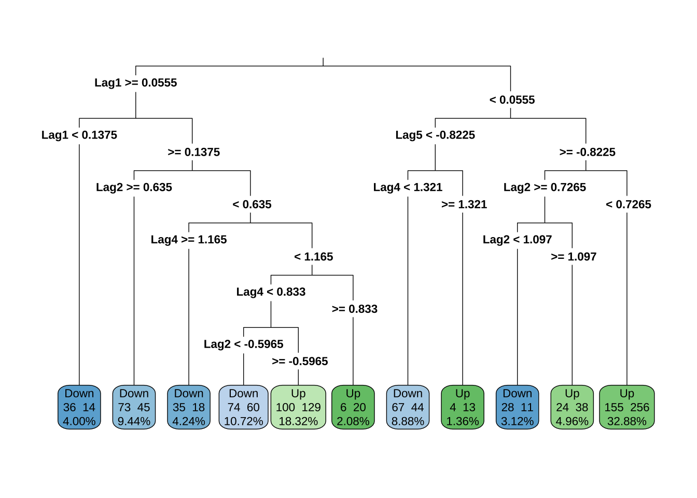
- CP表 (Complexity Parameter Table)
# CP値 vs 交差検証 (CV) 予測誤差
printcp(sp2_rp)
#>
#> Classification tree:
#> rpart(formula = Direction ~ ., data = sp500_2)
#>
#> Variables actually used in tree construction:
#> [1] Lag1 Lag2 Lag4 Lag5
#>
#> Root node error: 602/1250 = 0.4816
#>
#> n= 1250
#>
#> CP nsplit rel error xerror xstd
#> 1 0.063123 0 1.00000 1.00000 0.029345
#> 2 0.023256 1 0.93688 0.99668 0.029341
#> 3 0.016058 2 0.91362 0.98007 0.029319
#> 4 0.014950 5 0.86545 0.96844 0.029299
#> 5 0.014120 6 0.85050 0.97841 0.029316
#> 6 0.011628 8 0.82226 0.98671 0.029329
#> 7 0.010000 10 0.79900 0.97176 0.029305
plotcp(sp2_rp)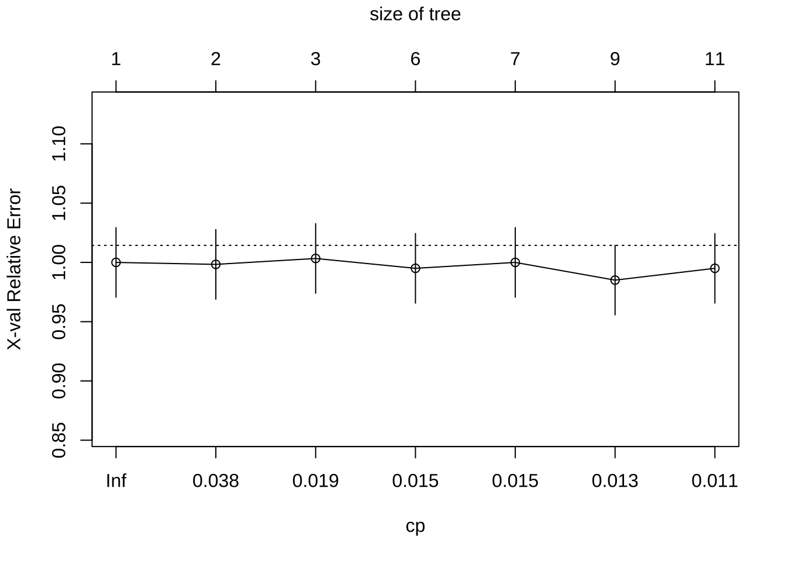
上の図は, cp (横軸) が増えても, 交差検証予測誤差の大きさ (縦軸) が点線の回りで上下するだけで 大きな変化が見られない, すなわち, 木の複雑度を変えても適合が改善しないことを示している. やはり, 株価予測 (実質的にランダム) を行っていることに よる帰結だと考えられる.- パフォーマンス評価 (内挿予測)
# クラス分類の内挿予測
pcls_sp_rp <- predict(sp2_rp, sp500_2, type = "class") # クラス分類の予測結果出力
# 正解率
mean(pcls_sp_rp == sp500_2$Direction)
#> [1] 0.6152
# 混同行列
tbl_rp <- table(pcls_sp_rp, sp500_2$Direction)自主課題 上で得られた決定木 (分類規則) を解釈してみよう.
パッケージcaretの関数confusionMatrix()を使って,
混同行列より各種評価指標を計算する.
2種類の表示モードで結果を示す:
- 適合率 (precision) - 再現率 (recall) 表示
- 感度(sensitivity) - 特異度 (specificity) 表示
library(caret)
# 適合率 (precision) - 再現率 (recall) 表示
confusionMatrix(tbl_rp, mode = "prec_recall")
#> Confusion Matrix and Statistics
#>
#>
#> pcls_sp_rp Down Up
#> Down 313 192
#> Up 289 456
#>
#> Accuracy : 0.6152
#> 95% CI : (0.5876, 0.6423)
#> No Information Rate : 0.5184
#> P-Value [Acc > NIR] : 3.483e-12
#>
#> Kappa : 0.2249
#>
#> Mcnemar's Test P-Value : 1.202e-05
#>
#> Precision : 0.6198
#> Recall : 0.5199
#> F1 : 0.5655
#> Prevalence : 0.4816
#> Detection Rate : 0.2504
#> Detection Prevalence : 0.4040
#> Balanced Accuracy : 0.6118
#>
#> 'Positive' Class : Down
#>
# 感度(sensitivity) - 特異度 (specificity) 表示
confusionMatrix(tbl_rp) # mode = 'sens_spec' (デフォルト)
#> Confusion Matrix and Statistics
#>
#>
#> pcls_sp_rp Down Up
#> Down 313 192
#> Up 289 456
#>
#> Accuracy : 0.6152
#> 95% CI : (0.5876, 0.6423)
#> No Information Rate : 0.5184
#> P-Value [Acc > NIR] : 3.483e-12
#>
#> Kappa : 0.2249
#>
#> Mcnemar's Test P-Value : 1.202e-05
#>
#> Sensitivity : 0.5199
#> Specificity : 0.7037
#> Pos Pred Value : 0.6198
#> Neg Pred Value : 0.6121
#> Prevalence : 0.4816
#> Detection Rate : 0.2504
#> Detection Prevalence : 0.4040
#> Balanced Accuracy : 0.6118
#>
#> 'Positive' Class : Down
#> パッケージcaretは, 多種多様な機械学習アルゴリズムを統一的な環境で 実行し比較できる環境を提供する. サポートベクターマシン (SVM), 勾配ブースティング, ランダムフォレスト, ニューラルネット, …, など多様な手法・アルゴリズムをサポートする.
以上のSmarketを用いた決定木分析での留意点として, 以下が挙げられる.
- 連続変数を分割する点の妥当性 (ロバストか?)
- → 離散変数 (特に2値) に変換するか?
- Volumeのラグ変数を加えるか? (そのままでは不可)